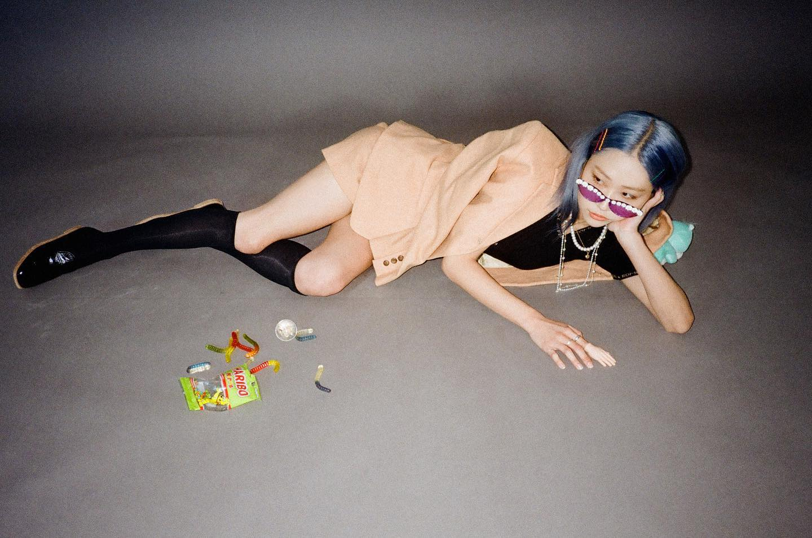

BIOGRAPHY
- 대한민국의 여성 싱어송라이터다.
원래 활동명을 미유(miyu)로 쓰다가 소속사를 옮긴 뒤 본명인 유지희로 바꿨다.
-
중학생 때 통기타 열풍이 불어 아버지께 기타를 사달라고 졸랐고,
고등학교에서 상처받았던 일이 있어 도망치듯 학교를 그만두고 집에만 있다가 기타를 치게 되었고,
조금씩 일기처럼 자신의 곡을 써 나갔다고 한다.
-
'미유'라는 이름이 옛 회사에서 지어준 이름이고, 새 소속사에서 새로 시작하는 마음에서 바꾸었다.
후회를 안할 좋은 선택이라고 생각한다"라고 말했다.
-
"'비행어른'이 가장 애착이 간다. '버려져야 하는 게 있을까요 궁금하네요.
그런 게 있다면 내 차례를 기다려볼게요'라는 가사가 있는데 비행청소년에 비유해 비행어른이라는 주제를 만들었다.
'비행어른'이라는 단어 자체가 나에게 맞는 표현이라고 생각한다. 나는 남들과 다른 우울함을 갖고 있다고 느꼈다.
이제는 어떻게 대처해야 하는지 깨달았다.
최근에 '비행어른2'를 만들었는데 개인적으로는 '비행어른5'까지는 만들어보고 싶다."
-
뛸 때는 힘들다는 생각밖에 들지 않아서 좋다고 한다.
-
2021년 12월 28일에 소속사인 GRDL이 해체가 되었다.